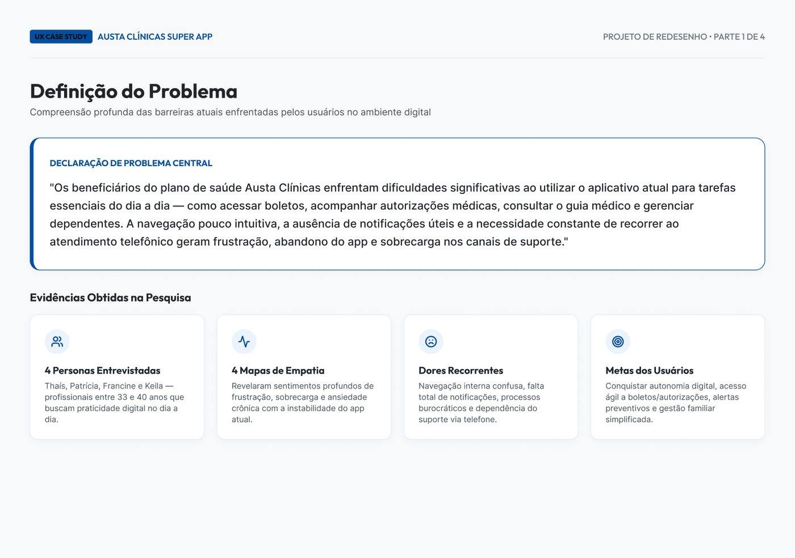
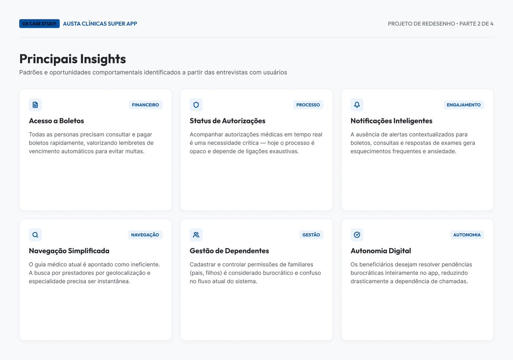
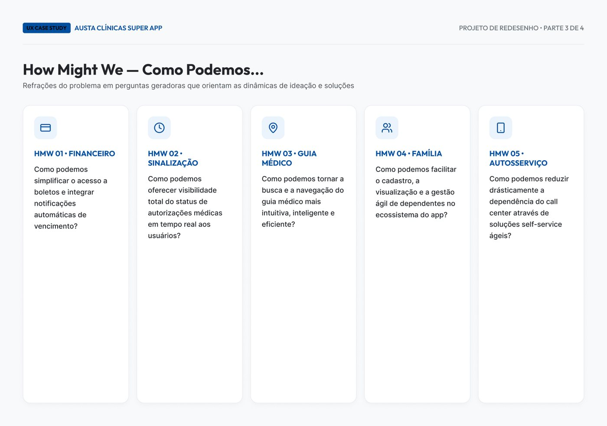
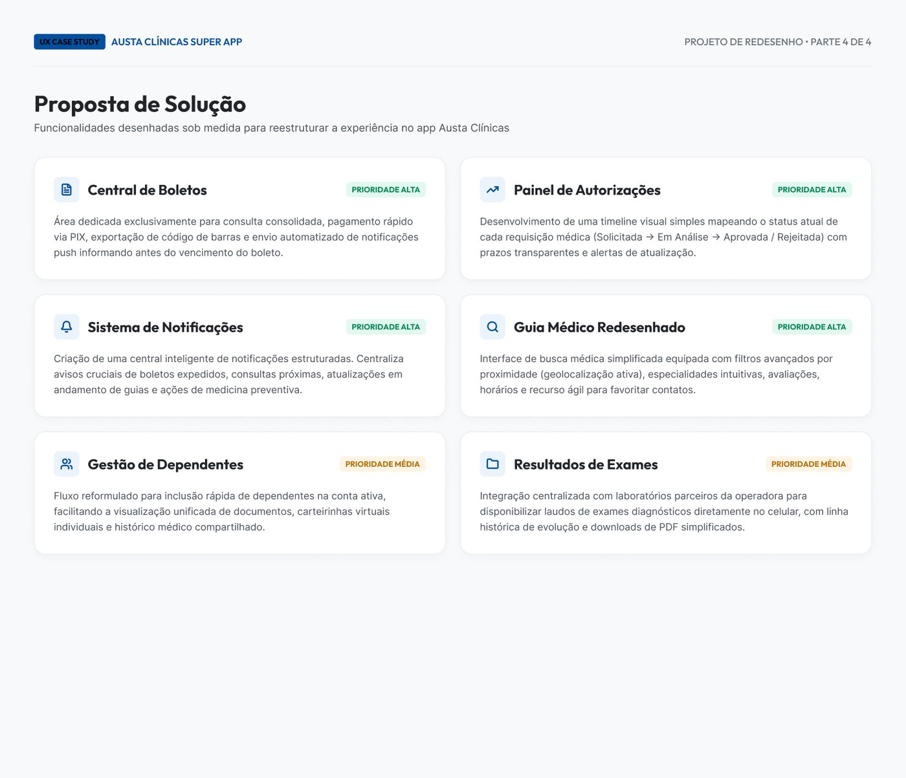
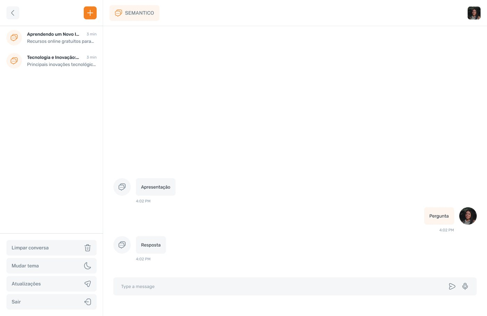

America's Health · Austa Clínicas · 2024
Da ideia de um Super App a um ecossistema de produtos de saúde para beneficiários, colaboradores e áreas administrativas.
01 — Visão geral
A America's Health é um ecossistema de saúde com sede em Goiânia e atuação em diferentes regiões do Brasil. Quando cheguei, não havia uma estrutura consolidada de design para os produtos digitais.
Como único designer em uma equipe multidisciplinar de 18 pessoas, minha missão foi criar essa base do zero e transformar a visão de um Super App em um ecossistema de serviços.
02 — Desafio
A direção queria reunir os serviços das clínicas em uma única experiência. Antes de desenhar, era preciso entender quem eram os usuários, que problemas enfrentavam e quais serviços realmente precisavam estar no app.
O produto combinava jornadas de saúde — guia médico, exames, autorizações, agendamentos e atendimento online — com funções financeiras e administrativas, como boletos, faturas, extratos, dependentes e dados cadastrais. O desafio era tornar essa complexidade simples, coerente e extensível.
03 — Meu papel
Estruturei o processo desde a descoberta: pesquisas com usuários, definição de problemas e insights, perguntas de "como podemos" e a tradução desse aprendizado em uma proposta de solução.
Fui responsável pela visão da experiência, arquitetura, interfaces, padrões e evolução dos produtos, e criei a base visual que mantém a consistência entre os módulos do ecossistema.




04 — Contribuições
05 — Omnichat
O Omnichat foi concebido como ferramenta interna para apoiar colaboradores em dúvidas sobre atendimento e evolução dos pacientes, conectando o analista a um canal de suporte assistido por inteligência artificial.
Nasceu como aplicação independente para web e mobile; a visão de longo prazo era incorporá-lo ao Super App como assistente integrado. O projeto mostrou como a base do ecossistema podia apoiar também os processos internos da organização.

06 — Resultados
O que começou como a proposta de um Super App se tornou a base de diferentes experiências digitais, conectadas pela mesma lógica de produto e pela mesma linguagem visual.